Puccini des Innamorati
RobeMâle · Seal tabby point
StatutAdopté
Album14 photos, de décembre 2019 à décembre 2021


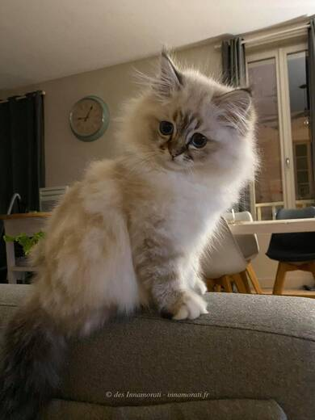

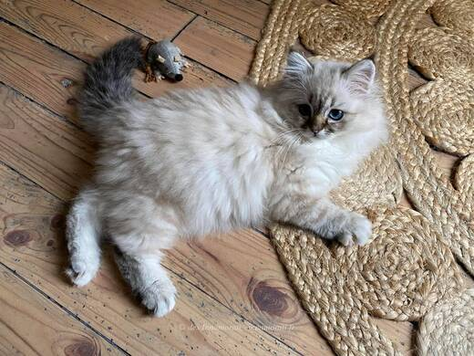

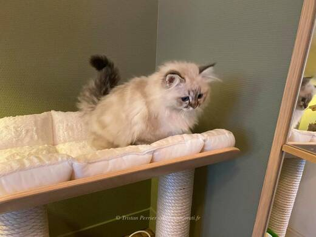

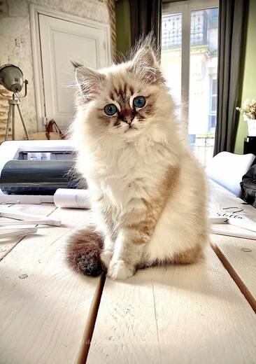

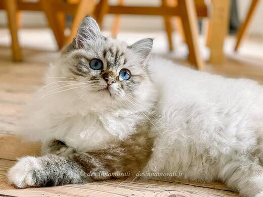

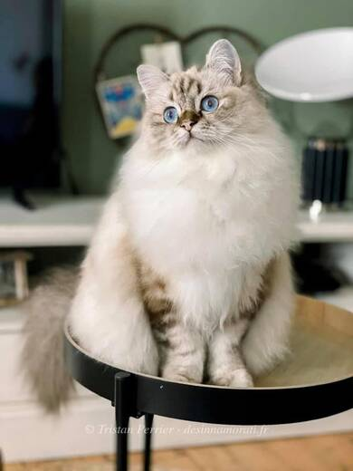

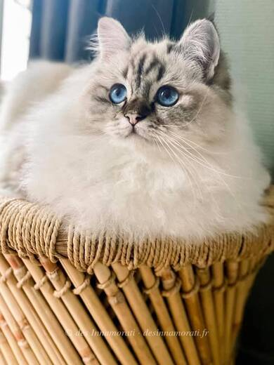

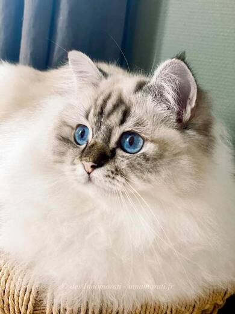

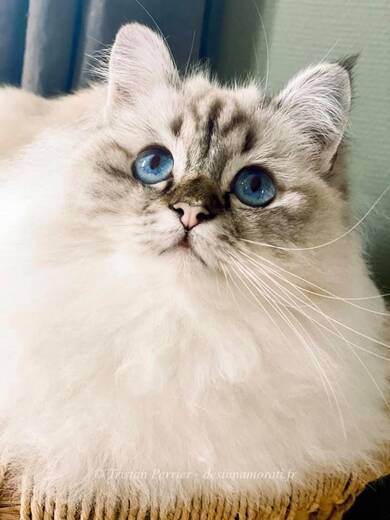

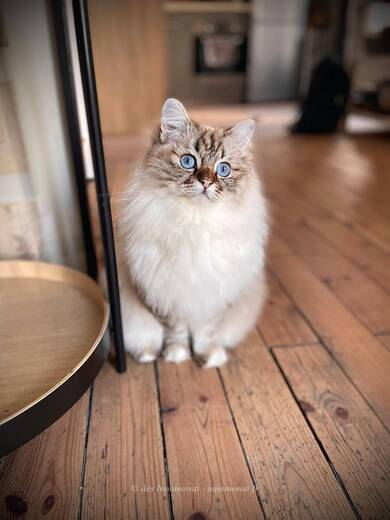

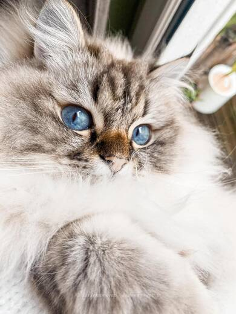

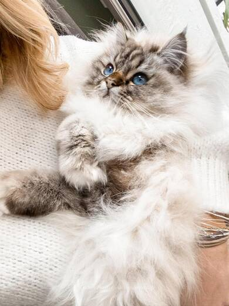

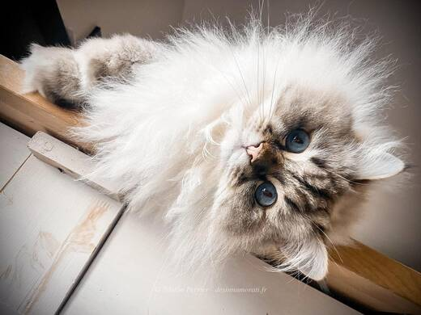
Photos réduites et marquées. Elles appartiennent à la Chatterie des Innamorati et ne peuvent pas être reprises dans une annonce.